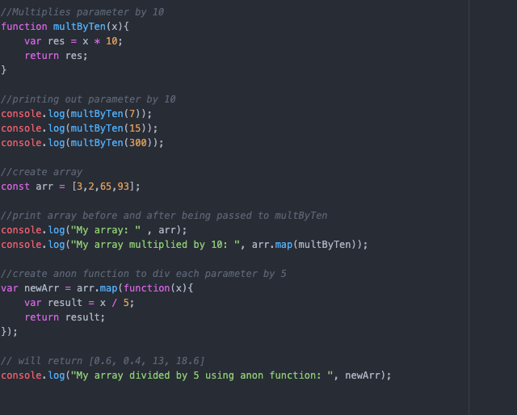

Challenge
This lab involved writing anon functions and using callbacks in JavaScript.
Problems
This lab presented us with no problems as Christian has prior programming experience. We created an initial function to multiply a paremeter by 10. We then used ".map" to pass an entire array to the function. From there we created an anon functon that manipulated a whole array by dividing each element by 5.
Results
We ran into 0 issues with this lab and created the javascript function with little difficulty. We successfully integrated thr script into or website as well as ensured functionality of the script.
Tour of code
The first function multiplies the parameter by a value of 10. From there we create an array in which we will pass to our previously mentioned function. We print these to the console, and then create a new variable, storing an anon function which manipulates our whole array by dividing each element by 5. The results are then printed to console. Open the console to see the results!